Diving Cozumel
Diving Cozumel
Cozumel gave me my first opportunity to dive on a coral reef, and it completely changed my understanding of what an underwater landscape could look like. From the surface, the Caribbean is beautiful, but once you descend below it, the environment becomes something entirely different.
The best comparison I can think of is that it felt like being transported into an alien world or somehow dropped back into the Jurassic period. Coral formations rose from the seafloor like cliffs, towers, and canyons. Schools of brightly colored fish moved through them, while sharks, eels, turtles, lobster, and other animals appeared almost unexpectedly out of the reef.
There was also something deeply peaceful about being underwater. Once the noise of the boat and surface disappeared, everything slowed down. Breathing through the regulator became rhythmic, movement became deliberate, and for long stretches there was nothing to focus on except buoyancy, breathing, the reef, and whatever appeared in front of us. It was one of the more meditative experiences I have had while traveling.
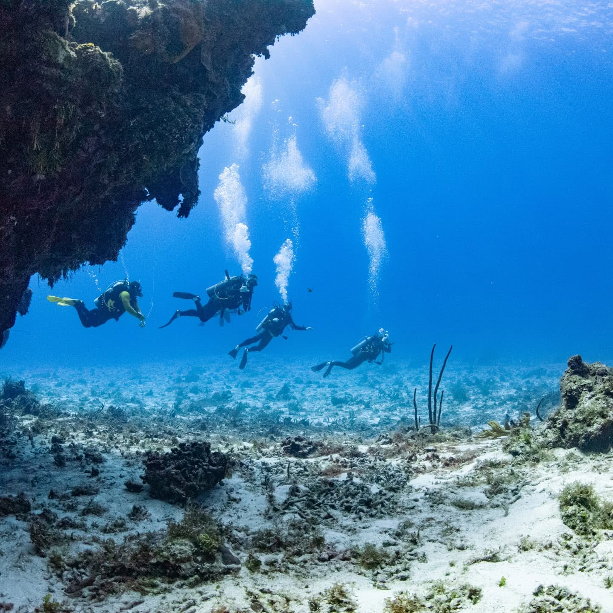
- Location: Cozumel, Quintana Roo, Mexico
- Dive center: Dressel Divers Cozumel at Iberostar Waves Cozumel
- My maximum depth: Approximately 60 feet
- Typical depth during our dives: Roughly 40–50 feet
- Favorite dive: Palancar Caves
- Other sites: Palancar Gardens, Colombia Shallows, Santa Rosa Wall, and San Francisco Reef
- Highlights: Coral canyons, walls, drift diving, sea turtles, sharks, moray eels, barracuda, lobster, and huge numbers of tropical fish
Cozumel and the Reef
Cozumel is one of the places most closely associated with scuba diving in the Caribbean. Much of the diving takes place within the Parque Nacional Arrecifes de Cozumel, a protected marine area along the southern and southwestern side of the island.
The reefs are part of the wider Mesoamerican Reef system, which extends through the western Caribbean. The protected area includes a collection of reef complexes with very different underwater terrain: shallow coral gardens, channels, pinnacles, steep walls, and areas where currents make drift diving the natural way to explore.
That variety was one of the things that surprised me most. I had imagined a coral reef as something relatively flat—a colorful layer of coral with fish swimming above it. Cozumel was nothing like that. The reef had topography. In some places it felt more like flying through a mountain range than swimming above the ocean floor.
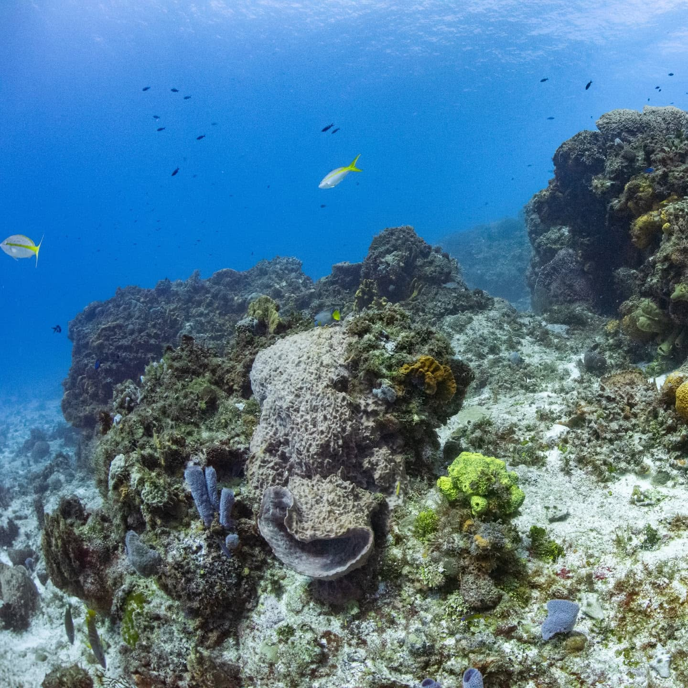
The Dive Center
We dove with Dressel Divers Cozumel, which operates from the Iberostar Waves Cozumel resort.
Having the dive center directly at the resort made the logistics extremely easy. The boats left from the property, and many of the major reef sites were only a short ride away. Instead of spending a large part of the day traveling to and from a marina, we could move between the resort and the reefs relatively quickly.
Dressel lists many of the same sites we visited—including Palancar, Santa Rosa, San Francisco, and Colombia—on its Cozumel dive schedule and site information.
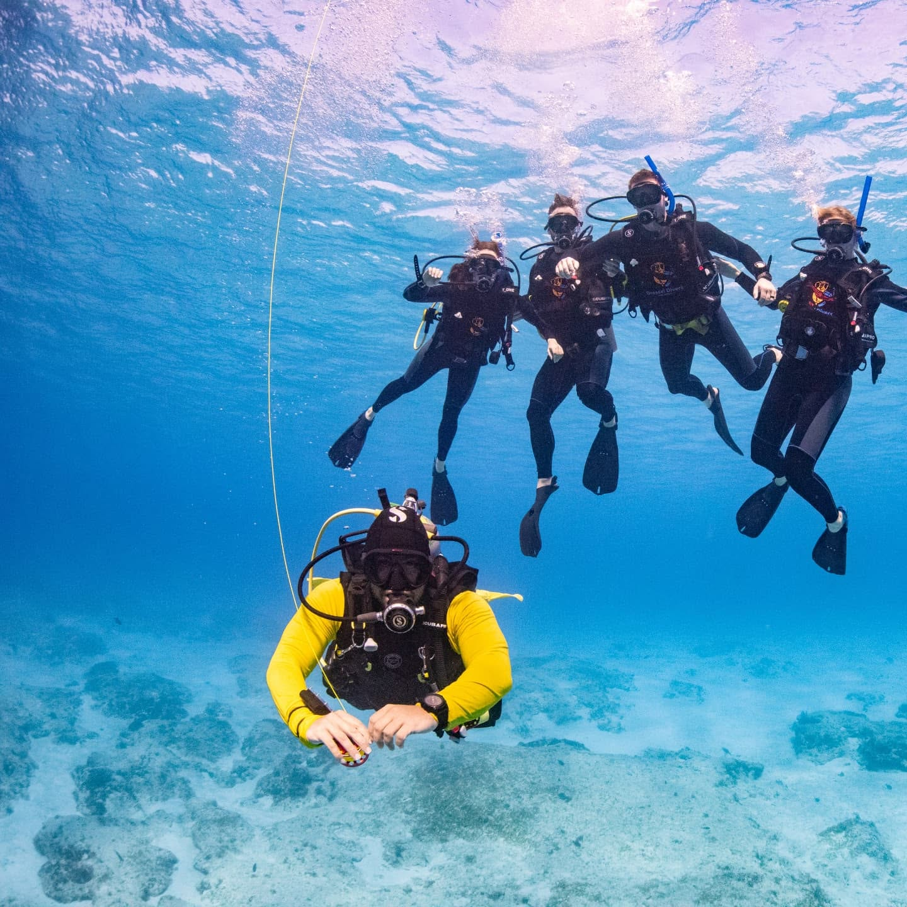
The Dive Sites
Every dive felt different. Even though the sites were all relatively close to one another, changes in depth, reef structure, current, and marine life gave each location its own personality.
Palancar Caves
Palancar Caves was my personal favorite.
The name makes it sound like traditional enclosed cave diving, but the formations are really a network of large coral passages, arches, channels, and canyon-like openings. Sunlight still reaches through much of the reef, which makes the experience very different from entering a true overhead cave system.
The best way I can describe it is an underwater canyon. Massive coral formations rose on both sides as we moved through open passages between them. At times it felt as if we were flying through a submerged landscape rather than swimming.
This was the dive that most strongly gave me that feeling of entering another world. The reef formations seemed ancient, almost prehistoric, and every turn opened into another section of coral.
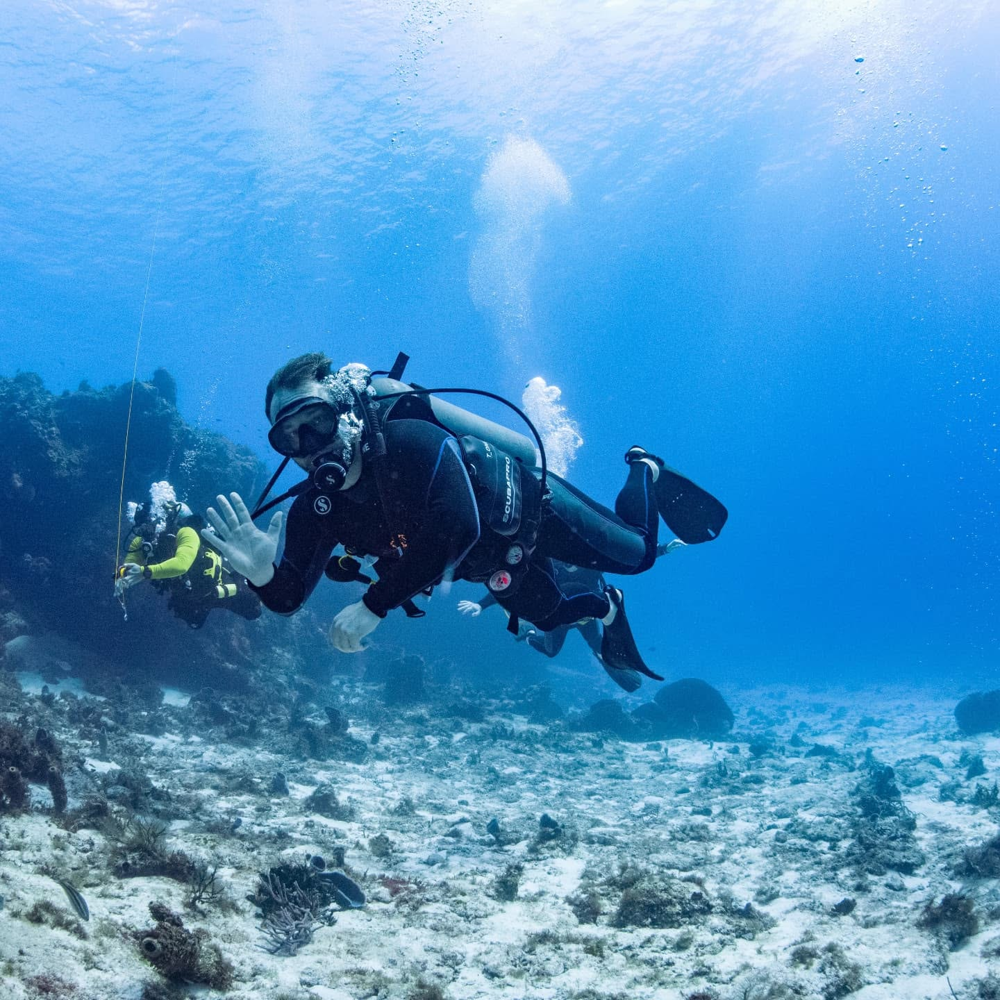
Palancar Gardens
Palancar Gardens was another section of the Palancar reef system, but it had a different character. Dressel typically dives it across a relatively broad recreational depth range, and the site combines coral formations with more open sections of reef.
The word gardens makes sense once you see it. Compared with some of the more dramatic walls and channels, this area felt like moving over a huge underwater landscape filled with coral, sponges, and fish.
For people planning their own trip, Dressel includes Palancar Gardens in its regular Cozumel diving schedule.
Colombia Shallows
Colombia Shallows showed how impressive a reef can be without going particularly deep. Shallower water also means more sunlight reaches the reef, helping bring out the color of the coral and fish.
The site contained large coral structures, channels, and plenty of marine life. It was a useful contrast to the deeper-feeling dives because we could spend more time taking in the reef rather than focusing as much on depth.
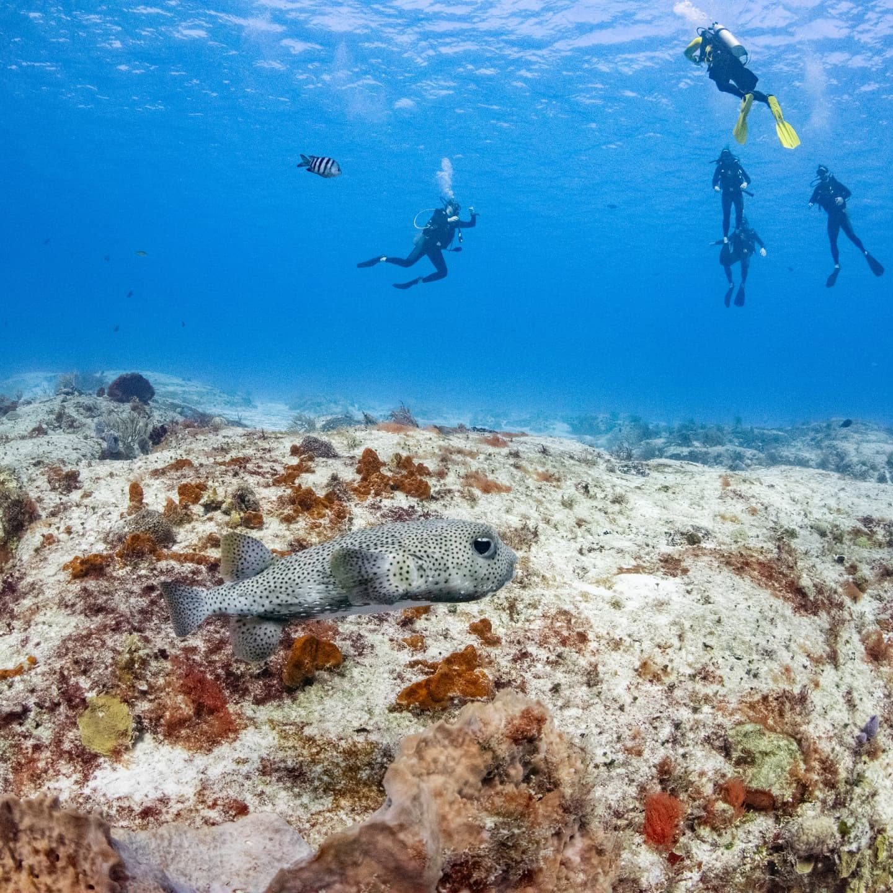
Santa Rosa Wall
Santa Rosa Wall was probably the most dramatic site in terms of scale.
The reef reaches an edge and then simply falls away. Looking over the side, the wall seemed to continue down for hundreds of feet until the details disappeared into blue and darkness. We stayed within our recreational dive depth—my maximum depth for the trip was around 60 feet—but the landscape below us continued far beyond where we were diving.
There is something slightly unnerving and fascinating about hovering beside a wall like that. On one side there is a reef full of structure and marine life. On the other is open water with no visible bottom.
Dressel describes Santa Rosa as a classic Cozumel drift dive with a wall beginning around recreational depths before dropping dramatically into much deeper water.
San Francisco Reef
San Francisco Reef gave us the strongest current I experienced during the trip.
Rather than fighting it, we essentially allowed the current to carry us along the reef. That was my introduction to how natural drift diving can feel in Cozumel. You establish your buoyancy, stay with the group, and let the ocean do much of the movement for you.
At times it felt almost like flying. The reef moved beneath us while we floated along with relatively little effort.
Cozumel is well known for this style of diving because currents run along many of the island’s reefs. The Parque Nacional Arrecifes de Cozumel protects many of these dive areas, including San Francisco and Santa Rosa.
Marine Life
The number of animals on the reef was difficult to keep track of. Some were obvious from a distance; others only appeared once the dive master pointed toward a small opening in the coral.
Among the animals we saw were:
- Nurse shark — One of the larger animals we encountered. Nurse sharks are generally bottom-oriented sharks and are often seen resting near reef structure.
- Moray eel — Usually partly hidden in holes and crevices in the reef, with only the head visible.
- Barracuda — Long, silver fish that seemed almost motionless in the water compared with the smaller reef fish around them.
- Caribbean spiny lobster — Large lobster tucked beneath reef ledges and openings. Unlike the classic cold-water lobster, Caribbean spiny lobsters do not have the oversized front claws.
- Possible reef shark — We saw what may have been a reef shark, although I cannot say with certainty that I identified the species correctly underwater.
- Sea turtles — Large turtles moving slowly across the reef were some of the easiest animals to stop and watch for a while.
- Countless tropical fish — Parrotfish, angelfish, schools of smaller reef fish, and many more species I could not identify at the time.
- Many others — Part of what made the diving memorable was constantly seeing animals I did not know well enough to name.
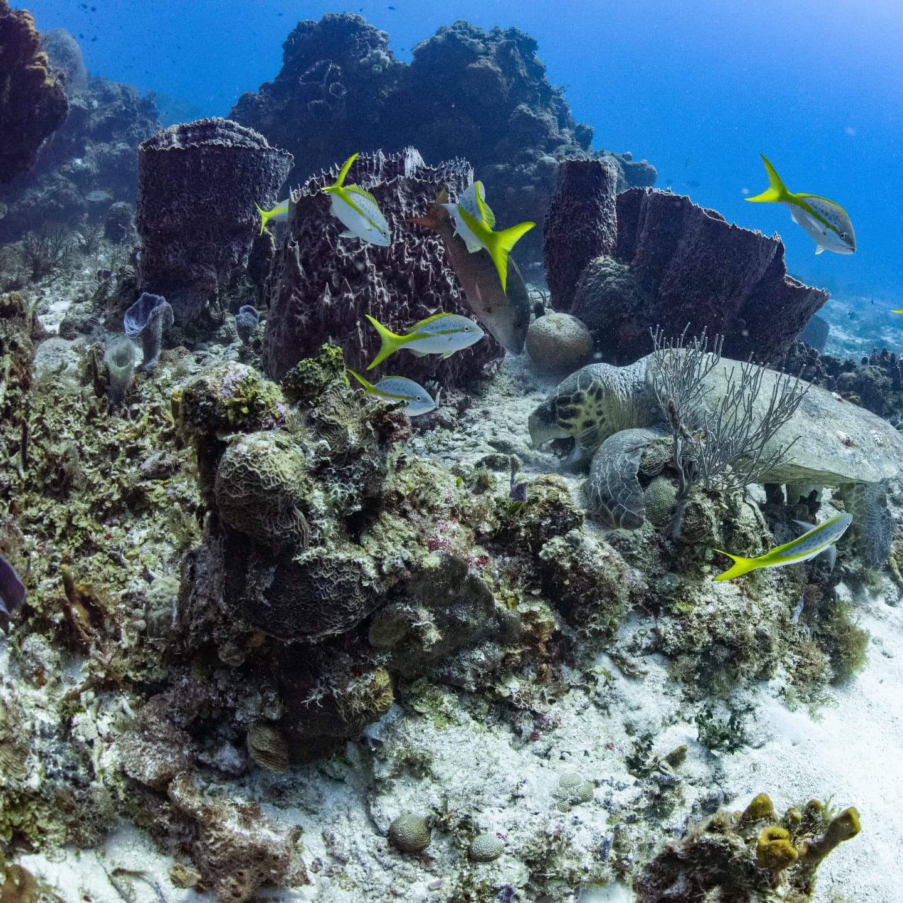
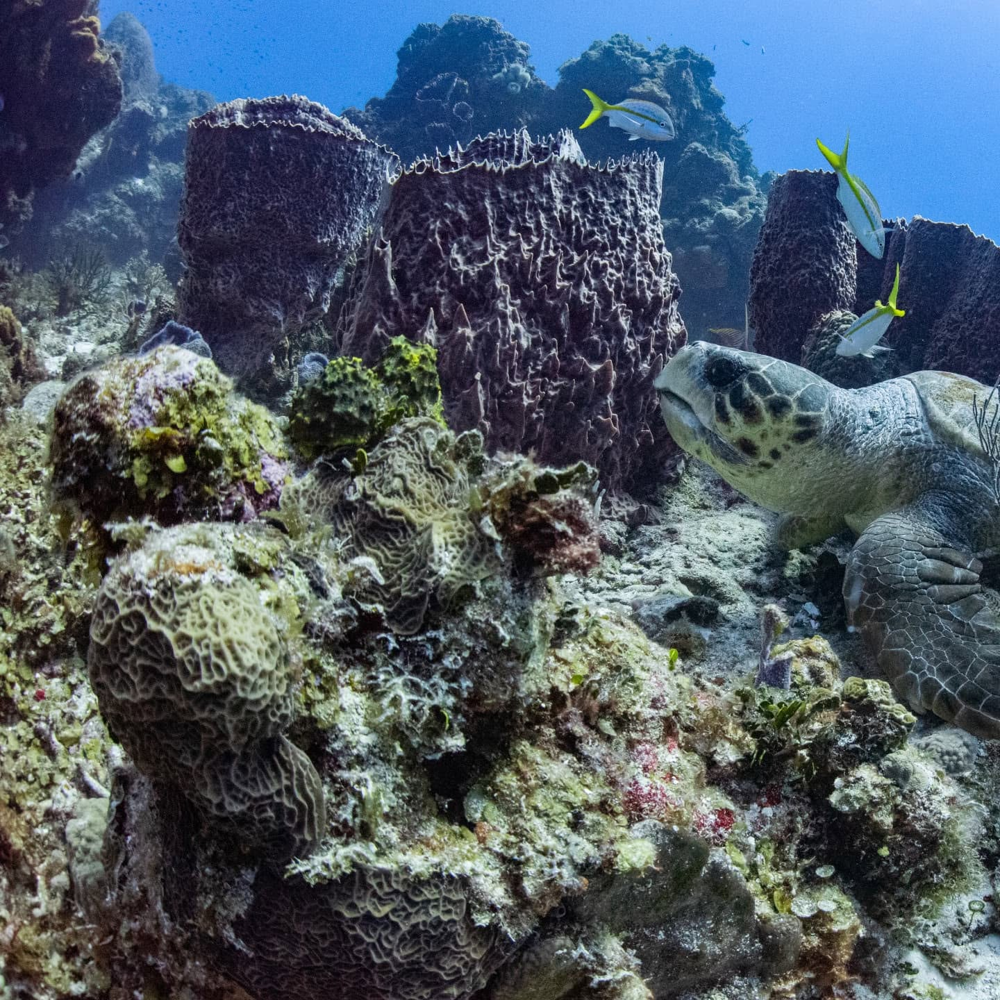
Learning to Move Underwater
One of the biggest adjustments was learning that movement underwater is very different from movement on land.
Good diving is less about constantly swimming and more about controlling buoyancy, breathing steadily, staying streamlined, and making small deliberate movements. When everything is balanced correctly, you can remain almost motionless in the water or move with the current using surprisingly little effort.
That was part of why the experience became so meditative. The more comfortable I became, the less I thought about the equipment and the more attention I could give to the environment around me.
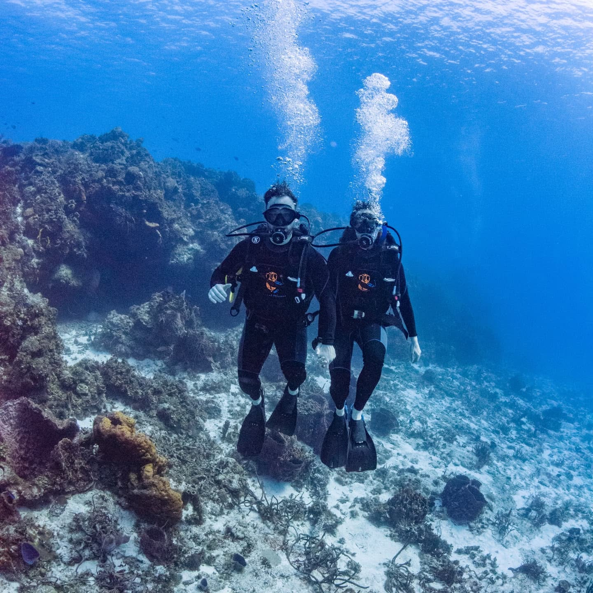
An Alien World
The part I remember most strongly is still the feeling of the landscape itself.
On land, we are used to understanding distance from roads, buildings, mountains, and horizons. Underwater, those reference points disappear. Coral towers can look like cliffs. A channel through the reef can look like a canyon. A wall can fall away beneath you until there is nothing but blue.
Light behaves differently. Sound behaves differently. Movement is three-dimensional because there is no requirement to remain attached to the ground.
It genuinely felt like entering an alien environment.
At the same time, the reef was full of life. Every surface seemed to contain something—coral, sponges, fish, crustaceans, or animals hiding inside openings that I would have completely missed without someone pointing them out.
That combination of unfamiliar terrain and dense life was what gave the dives their almost prehistoric or Jurassic feeling.
Iberostar Cozumel
We stayed at Iberostar Waves Cozumel, where the Dressel dive center is located.
The resort had a jungle-village atmosphere, with bungalow-style buildings surrounded by tropical vegetation rather than one large hotel tower. That fit the trip surprisingly well. We could spend the day underwater, return to the resort, and still feel surrounded by greenery and the Caribbean.
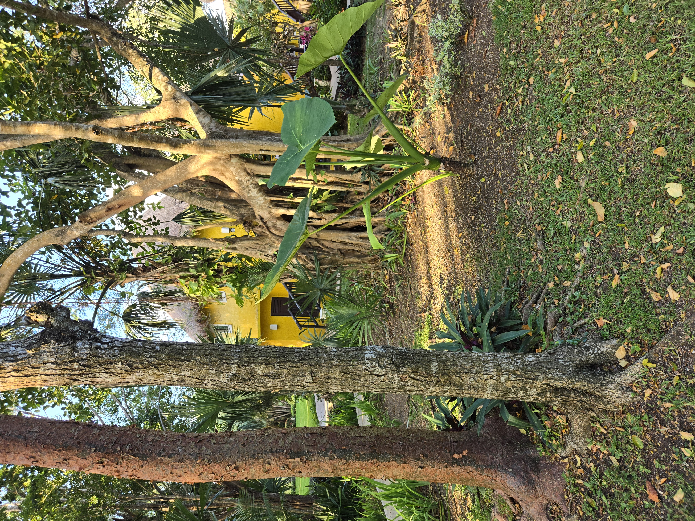
The quieter moments after diving were also some of the best. After spending much of the day underwater, sitting near the beach and watching the light change over the Caribbean felt like the right way to end the day.
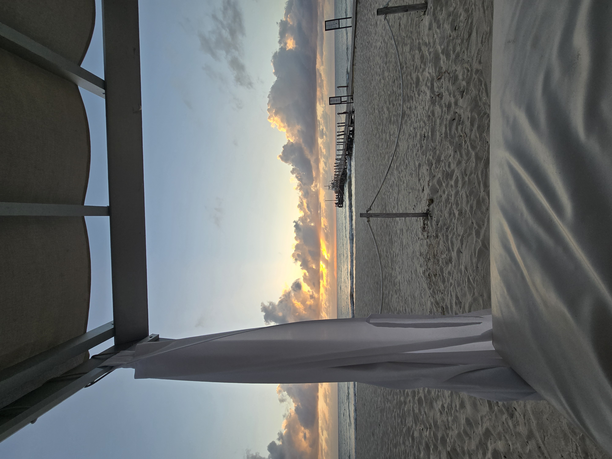
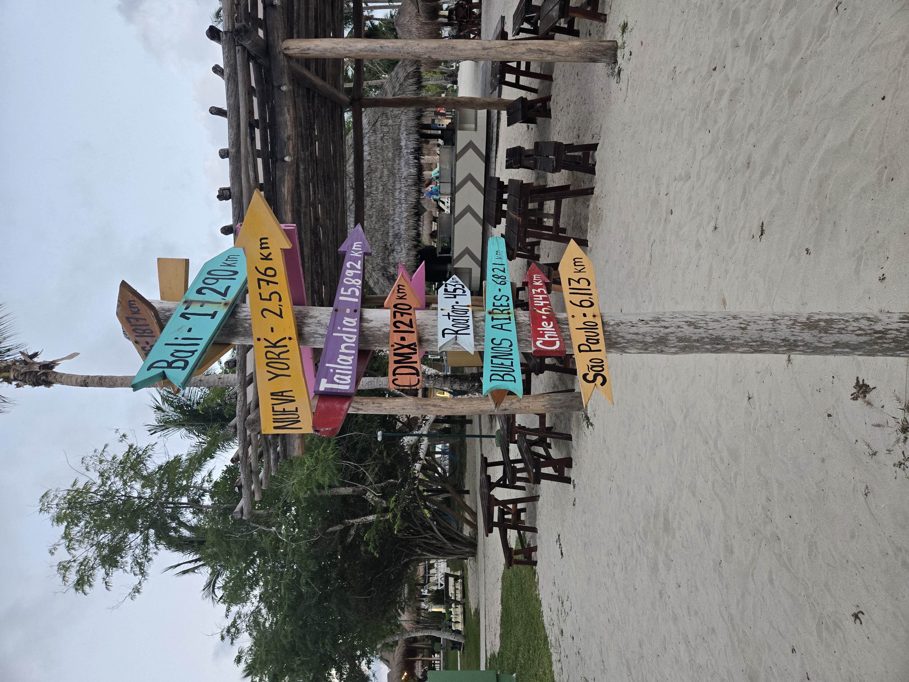
Underwater Photography
A large part of why I can look back on the dives so clearly is because we had professional underwater photographs from the trip.
Much thanks goes to UW-Film for documenting the experience, and specifically to Cata for taking such beautiful photographs underwater. Shooting good photographs while diving is difficult: the photographer has to manage buoyancy, current, marine life, composition, lighting, and dive safety at the same time.
The underwater photographs throughout this page were taken by UW-Film unless otherwise noted. Their work from Cozumel can also be found through the UW-Film Vimeo page.
Reef Conservation
Cozumel’s reefs are not only dive attractions; they are part of a protected ecosystem. The Parque Nacional Arrecifes de Cozumel was established to help protect the reefs and marine life along the island’s southern coast.
The Mexican conservation authority, CONANP, monitors reef health and has periodically changed access to particular areas when reefs need recovery time. That means dive-site availability can change, and it is worth checking current park guidance or asking an authorized dive operator before a trip.
A few basic practices make a difference while diving:
- Maintain neutral buoyancy and avoid touching or standing on coral.
- Keep fins and equipment away from the reef.
- Do not chase, touch, or feed marine animals.
- Follow the dive master’s route and current park restrictions.
- Use authorized operators familiar with the marine park.
- Take photographs and memories, but leave the reef where it is.
For current information, visit the Cozumel Reefs National Park or CONANP’s protected-area information.
Useful Links & Sources
For anyone interested in planning a similar diving trip:
- Cozumel Reefs National Park: CONANP — Parque Nacional Arrecifes de Cozumel
- Protected-area visitor information: CONANP — Arrecifes de Cozumel
- Dive center: Dressel Divers Cozumel
- Cozumel dive excursion and conditions: Dressel Divers — Cozumel
- Palancar Caves: Dressel Divers guide
- Santa Rosa Wall: Dressel Divers guide
- Colombia Shallows: Dressel Divers shallow-water diving guide
- Cozumel dive sites: Dressel Divers dive-site overview
- Resort: Iberostar Waves Cozumel
- Underwater photography: UW-Film videos
Final Thoughts
Cozumel was my first time diving a coral reef, and it was one of those experiences that made the world feel larger afterward.
The photographs capture the color and marine life, but they cannot completely reproduce the scale of the environment or the feeling of moving through it. Palancar Caves felt like flying through underwater canyons. Santa Rosa Wall disappeared beneath us into darkness. San Francisco Reef showed me how powerful the current could be and how effortless drift diving could feel when you moved with it instead of against it.
And then there was the quieter side of it: hearing only my own breathing, hovering above the reef, and watching animals move through an environment that seemed completely detached from the world above the surface.
For a place filled with so much life and movement, being underwater was remarkably peaceful.
Much thanks goes to Dressel Divers Cozumel for guiding us through the reefs, and to UW-Film—and especially Cata—for the photographs that captured an experience that was otherwise very difficult to put into words.